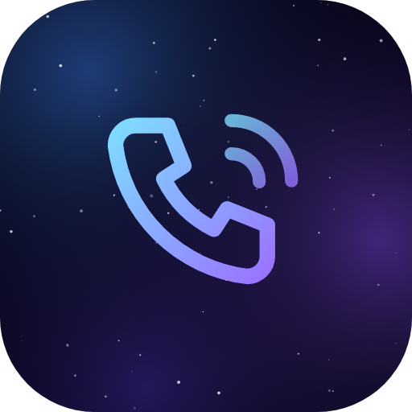
뉴니버스 전화 v6 (시험판)
버전 6-test · 뉴니버스 고정 서명(런처와 같은 서명) · 런처와 따로 까는 앱
내려받기 · 뉴니버스 전화 v6 (약 11.7MB)
v1~v5를 깔았던 폰은 지우지 않고 그대로 깔면 업데이트돼요(통화 기록·설정 그대로).
v6 새로워진 점
- 통화 끝나고 「메모 남길까요?」: 15초 넘게 통화했거나 저장된 사람과 통화가 끝나면 카드가 떠요. 건너뛰기는 바로 닫혀요. 주문·배송·견적·다시 연락 단추로 빨리 쓰거나 말로 남기기(한국어 받아쓰기). 메모는 이 폰에만 그 번호에 붙어 저장돼요. 잠금 화면에서는 인터넷 받아쓰기를 쓰지 않고 폰 안 받아쓰기만 써요.
- 메모 보기·고치기·지우기: 키패드 ⋮ › 통화 메모(사람별), 또는 최근 통화 줄을 펼쳐 메모. 지운 뒤 7초 안에 되돌리기.
- 단골 한 줄: 걸려올 때 · 걸 때 · 통화 중 화면에 그 번호의 최근 메모와 마지막 통화 며칠 전이 보여요. 잠금 화면에서는 이름만 보이고 메모 내용은 숨겨요.
- 차단: 최근 통화 줄을 펼쳐 차단(또는 주소록에서 길게 눌러) → 한 번 확인 → 차단 직후 되돌리기. 키패드 ⋮ › 차단 목록에서 풀어요. 차단된 전화는 최근 통화에 ‘차단됨’으로 남아요. 기본 전화 앱일 때만 돼요(안드로이드 규칙). 폰 전체 차단 목록이라 삼성 전화·메시지에서 막은 번호도 같이 보여요. 112·119 같은 긴급 번호는 막을 수 없어요.
- 명함 → 연락처: 주소록 오른쪽 위 명함 → 카메라로 찍기 / 사진에서 고르기 → 이름·휴대폰·전화·가게·직함·이메일을 폰 안에서 읽어 채워요(인터넷 안 씀) → 확인·수정 → 주소록에 저장. 틀린 칸은 아래 ‘읽은 글’ 줄을 누르면 그 칸에 들어가요. 사진은 저장하지 않아요.
- 일정 10분 전 「회의 모드 켤까요?」: 폰 달력(뉴니버스 달력 포함) 일정 10분 전에 알림과 최근 통화 위 카드로 물어요. 켜기를 누르면 회의 중 모드가 켜지고 일정이 끝나면 저절로 꺼져요. 운전 중일 때, 종일 일정, 3시간 넘는 일정은 묻지 않아요. 전화 설정에서 묻기 · 자동으로 켜기 · 끄기를 골라요.
- 큰 버튼 화면 (부모님용): 전화 설정 › 큰 버튼 화면 › 켜기 → 자주 통화한 사람(최근 30일)이나 주소록에서 3~4명 고르기. 켜면 앱을 열 때 큰 버튼 화면부터 나오고 누르면 바로 전화. 끄면 지금 화면 그대로예요.
v6에서 새로 묻는 허용 (쓸 때만 물어요): 마이크(말로 메모) · 연락처 쓰기(명함 저장 — 거절해도 주소록 앱 새 연락처 화면으로 열 수 있어요) · 캘린더(일정 10분 전). 카메라 권한은 없어요(폰 카메라 앱이 찍어서 넘겨줘요). 인터넷 권한도 없어요.
받아쓰기는 폰의 한국어 음성 인식에 따라요. ‘한국어 받아쓰기가 준비되지 않았어요’가 나오면 설정 › 일반 › 언어 › 음성 입력(Google 음성 인식)에서 한국어 오프라인 인식을 내려받아 주세요. 잠금이 풀려 있으면 폰의 일반 음성 인식으로 한 번 더 시도해요.
v5 새로워진 점 · 상황 모드 (운전 중 · 회의 중)
- 「운전 중」「회의 중」 모드를 넣었어요. 켜면 방해 금지로 벨소리·알림이 조용해지고, 못 받은 전화(안 받았거나 거절한 전화)에는 문자로 자동 답장이 가요. 예) 「지금 운전 중이라 전화를 못 받아요. 도착하면 연락드릴게요.」 문구는 직접 고칠 수 있어요(140자).
- 하루 100통쯤 오는 폰이라 답장은 신중하게 가요: 같은 번호에는 모드 한 번에 딱 한 번, 최대 40건. 휴대전화 번호에만 보내요. 1588 같은 대표번호·광고·인증 문자 번호·발신자 표시 제한에는 어떤 설정에서도 안 보내고, 일반전화·인터넷전화·해외 번호는 설정에서 켠 때만 보내요. ‘연락처에 있는 사람에게만’도 고를 수 있어요.
- 이 사람들은 울려요: 모두 조용히 / 즐겨찾기(연락처에서 별표 한 사람)만 / 연락처 사람만. ‘같은 번호가 15분 안에 또 걸면 울려요’도 켤 수 있어요. 알람은 언제나 울려요. (안드로이드에는 ‘자주 거는 사람’ 목록이 따로 없어서 즐겨찾기로 대신했어요.)
- 끄면 요약 카드가 떠요: 놓친 전화(사람별 묶음 + 전화·문자 단추), 그동안 받은 문자, 보낸 자동 답장(보냄/실패)과 왜 안 보냈는지(대표번호 3 · 이미 보낸 번호 2…). ‘확인했어요’를 누르기 전까지 남아 있어요.
- 회의 중은 30분 · 1시간 · 2시간 뒤 자동으로 꺼지게 할 수 있어요. 폰을 껐다 켜도 이어져요.
- 모드가 켜져 있는 동안 알림창에 ‘끄기’ 단추가 떠요. 방해 금지를 이미 더 강하게 켜 둔 경우엔 건드리지 않고, 끝낼 때 원래 상태로 돌려놔요.
- 어디서 켜나요? 키패드 ⋮ › 상황 모드, 또는 앱 아이콘을 길게 눌러 「운전 중」「회의 중」(누르면 한 번 묻고 켜요). 켜져 있으면 최근 통화 맨 위에 카드가 떠서 바로 끌 수 있어요.
- 비행기 모드는 일반 앱이 켤 수 없어서(안드로이드가 막음) 넣지 않았어요.
처음 켤 때 허용 2가지 (한 번만 물어요 · 안 해도 켜지긴 하고 그 기능만 빠져요)
- 방해 금지 접근: 모드의 켜기 → 안내 창의 허용 → 뜨는 ‘방해 금지 접근’ 목록에서 뉴니버스 전화를 켜요. (직접 가려면 갤럭시 설정 › 알림 › 방해 금지 또는 설정 › 애플리케이션 › ⋮ › 특별한 접근 › 방해 금지 접근 — One UI 8에서는 화면 이름이 조금 다를 수 있어요)
- 문자 보내기(자동 답장용): 허용 → 권한 창에서 허용. 기본 전화 앱이 아니면 전화 상태도 함께 물어요(걸려온 번호를 알기 위해).
- (선택) 요약에 받은 문자를 넣으려면 문자 읽기, 놓친 전화 목록은 통화 기록 허용이 있으면 돼요.
허용 창이 안 뜨고 바로 거절되면 (직접 설치한 앱은 안드로이드 13 이상에서 문자 권한이 한 번 막혀요): 안내 창의
앱 정보 열기 → 오른쪽 위
⋮ →
제한된 설정 허용(지문·비밀번호) → 돌아와
다시 시도.
자동 답장은 실제 문자 요금이 나갈 수 있어요(요금제에 따라). 처음엔 가족·동료 폰으로 한두 통 시험해 보고 쓰세요. 이 앱이 기본 전화 앱일 때 가장 정확해요(안 받은 전화를 앱이 직접 보니까요). 기본 앱이 아니면 ‘전화 상태’ 허용(그리고 번호를 보려면 ‘통화 기록’ 허용)으로 같은 일을 하는데, 이쪽은 폰에서 직접 확인이 더 필요해요.
v4 새로워진 점
- 주소록 오른쪽 위 빈 네모 흔적을 없앴어요. 초성(ㄱ ㄴ ㄷ…)을 밀 때만 잠깐 뜨는 큰 글자 풍선이 안 쓸 때도 빈 채로 남아 있던 문제였어요. 이제 초성 막대를 누르고 있을 때만 보이고 손을 떼면 사라져요.
- 화면 맨 위 글씨(주소록·최근 통화·전화 설정 제목, ← 단추)가 상태 표시줄(시계·배터리) 밑으로 겹치지 않게 상태 표시줄 높이만큼 띄웠어요.
- 주소록 맨 아래 연락처가 아래 탭 바에 가려지지 않는지 확인했어요. 안 쓸 때 화면 맨 아래에 살짝 비치던 메뉴 테두리도 없앴어요.
v3 새로워진 점
- 아래 탭 바에서 설정 탭을 뺐어요. 이제 키패드 · 최근 통화 · 주소록 세 칸이에요.
- 전화 설정은 키패드 오른쪽 위 ⋮ › 전화 설정 전체 보기로 들어가요. 왼쪽 위 ← 또는 폰의 뒤로 가기로 원래 화면에 돌아와요.
v2 새로워진 점
- 최근 통화 위의 큰 ‘기본 전화 앱으로 설정’ 카드를 없앴어요. 대신 키패드 화면 오른쪽 위 ⋮ (점 세 개)에 전화 설정을 모았어요: 기본 전화 앱으로 설정(이미 기본이면 ‘기본 전화 앱 사용 중’), 권한, 앱 정보·제한된 설정, 원래 전화 앱으로 돌아가기, 전체 설정. 할 일이 남아 있으면 ⋮ 옆에 작은 점이 떠요.
- ‘앱을 기본 전화 앱으로 사용하기 위한 액세스가 거부됨’ 창이 뜨면, 앱 안에 무엇을 하면 되는지와 앱 정보 열기 단추가 나와요(아래 3번).
- 아래 탭의 검색 → 주소록: 연락처가 가나다순으로 나오고, 오른쪽 ㄱ ㄴ ㄷ … A #을 누르거나 밀면 그 자리로 바로 넘어가요. 맨 위 검색칸에서 이름·초성·번호로 찾고, 최근 검색 (최근 15일)과 통화 수도 그대로예요. 연락처를 누르면 바로 전화가 걸리고, 길게 누르면 문자·저장 메뉴가 나와요.
- 통화 기록 권한이 없을 때 ‘통화가 없어요’ 대신 ‘통화 기록 권한이 필요해요’가 나와요.
시험판이에요. 먼저 사무실 폰에서 써 보고, 이상하면 바로 원래 전화 앱으로 돌릴 수 있어요(아래 4번). 112·119 같은 긴급 전화는 안전을 위해 항상 폰 기본 전화 앱이 연결해요.
1. 설치하기
- Play 프로텍트 검사 잠시 끄기: Play 스토어 앱 → 오른쪽 위 프로필 사진 → Play 프로텍트 → 오른쪽 위 톱니바퀴 → Play 프로텍트로 앱 검사를 끄기.
- 이 폰의 크롬(또는 삼성 인터넷)에서 위 내려받기를 눌러요. ‘해를 끼칠 수 있습니다’가 나오면 다운로드.
- 내 파일 › 다운로드에서 newniverse-phone-v6-test.apk를 눌러요. ‘출처를 알 수 없는 앱’ 안내가 나오면 설정 → 이 출처 허용을 켜고 돌아와 설치.
- 설치가 끝나면 Play 프로텍트 검사를 다시 켜 주세요 (1번과 같은 곳).
2. 처음 켜기 (권한 허용)
- 앱 목록에서 뉴니버스 전화를 눌러요.
- 권한 창이 차례로 떠요: 전화, 통화 기록, 연락처, 알림을 모두 허용해 주세요.
· 통화 기록: 최근 통화와 ‘15일 통화 수’ · 연락처: 이름·초성 검색 · 전화: 바로 걸기 · 알림: 걸려오는 전화·부재중
- 실수로 거절했으면 키패드 ⋮ › 권한 허용하기 (또는 앱 정보 › 권한).
3. 기본 전화 앱으로 지정하기
기본 전화 앱으로 지정해야 걸려오는 전화와 통화 중 화면이 뉴니버스 모양으로 나와요. 지정하지 않아도 걸기·최근 통화·주소록은 돼요(통화 화면은 원래 전화 앱 모양).
- 뉴니버스 전화 키패드 화면 오른쪽 위 ⋮ → 기본 전화 앱으로 설정을 눌러요. (또는 ⋮ › 전화 설정 전체 보기 → 기본 전화 앱)
- 뜨는 창에서 뉴니버스 전화를 고르고 기본으로 설정을 눌러요.
- 창이 안 뜨면: 폰 설정 › 애플리케이션 › 기본 앱 선택 › 전화 앱 → 뉴니버스 전화.
‘액세스가 거부됨’(제한된 설정) 창이 뜨면 — 직접 설치한 앱이라 안드로이드가 한 번 막은 거예요.
- 뉴니버스 전화에 뜬 안내에서 앱 정보 열기를 눌러요. (직접 가려면: 설정 › 애플리케이션 › 뉴니버스 전화)
- 오른쪽 위 ⋮ → 제한된 설정 허용 → 지문·비밀번호 확인.
- 뉴니버스 전화로 돌아와 다시 시도 (또는 ⋮ → 기본 전화 앱으로 설정).
통화 기록 권한 창이 안 뜰 때도 같은 방법으로 풀려요(그다음 앱 정보 › 권한 › 통화 기록 허용).
4. 원래 전화 앱으로 돌아가기
- 폰 설정 › 애플리케이션 › 기본 앱 선택 › 전화 앱.
- 전화(삼성 기본 전화)를 고르면 끝. 뉴니버스 전화 키패드 ⋮ › 원래 전화 앱으로 돌아가기로도 갈 수 있어요.
- 뉴니버스 전화를 지워도 자동으로 원래 전화 앱으로 돌아가요. 통화 기록과 연락처는 폰에 그대로 남아요.
5. 되는 것 · 아직 안 되는 것
- 키패드: 번호 누르기, 초성 검색(1=ㄱㅋ 2=ㄴㄹ 3=ㄷㅌ 4=ㅂㅍ 5=ㅅㅎ 6=ㅈㅊ 7=ㅇㅁ), 0 길게 = +, 지우기 길게 = 모두 지우기, 빈 칸에서 통화 버튼 = 마지막으로 건 번호 불러오기. 통화 버튼은 누른 번호 그대로 걸어요.
- 최근 통화: 사람별 하루 한 줄(예: 김사장 · 오늘 7통 · 마지막 오후 3:20 부재중), 부재중이면 빨간 점, 누르면 그날 통화가 시간순으로 펼쳐짐, 왼쪽으로 밀면 전화·삭제(3.5초 안에 되돌리기), 최근 30일까지.
- 주소록: 가나다순 + 초성 빨리 넘기기, 맨 위 검색칸(이름·초성·번호), 최근 검색 (최근 15일) + 이름 옆 15일 통화 수, 누르면 바로 전화.
- 걸려오는 전화: 받기·거절·문자로 거절(빠른 답장 3개), 받기 버튼 위로 밀기, 잠금 화면 위에도 뜸, 최근 15일 통화 수 표시.
- 통화 중: 음소거·스피커·키패드(번호 보내기)·통화 추가·대기·종료, 귀에 대면 화면 꺼짐, 통화 중 알림에서 ‘끊기’.
- 부재중 알림(기본 전화 앱일 때).
- 상황 모드: 운전 중 · 회의 중, 방해 금지 + 못 받은 전화에 자동 문자 답장 + 끝난 뒤 요약(위 v5).
- v6: 통화 후 메모 · 단골 한 줄 · 차단 목록 · 명함 → 연락처 · 일정 10분 전 회의 모드 · 큰 버튼 화면(위 v6).
- 통화 녹음 없음 (안드로이드가 일반 앱의 통화 녹음을 막아요. 버튼도 뺐어요).
- 영상 통화, 통화 합치기(회의), 블루투스 이어폰으로 바꾸기 단추, 연락처 편집 화면, 음성사서함은 아직 없어요(원래 앱 또는 연락처 앱 사용).
- 상황 모드의 「음성으로 켜기」는 아직 런처에 이어 붙이지 않았어요(앱 쪽 문은 준비돼 있어요). 지금은 ⋮ 메뉴나 앱 아이콘 길게 누르기로 켜요.
- 듀얼 심 폰에서 어느 심으로 걸지 고르는 창은 안드로이드 기본 창이 떠요.
- 문자(SMS) 앱은 다음 단계예요. ‘문자’ 단추는 지금 쓰는 문자 앱을 열어요. (상황 모드의 자동 답장만 이 앱이 직접 보내요.)
6. 확인해 주세요 (사무실 폰)
- 설치 → 권한 4개 허용 → 최근 통화에 실제 기록이 사람별 하루 한 줄로 나오나요?
- 키패드에서 자음 번호(예: 김사장 → 156)로 이름이 찾아지나요? 번호 일부로도요?
- 기본 전화 앱 지정 창이 뜨고, 지정되나요?
- 다른 폰으로 걸어서: 화면이 꺼져 있을 때 / 잠금일 때 / 다른 앱을 쓰는 중일 때 수신 화면이 뜨고 벨이 울리나요? 받기·거절·문자로 거절이 되나요?
- 통화 중: 음소거·스피커가 실제로 바뀌나요? 키패드 번호(ARS)가 상대에게 가나요? 귀에 대면 화면이 꺼지나요?
- 안 받은 전화 뒤 부재중 알림이 뜨나요? 최근 통화에 빨간 점이 나오나요?
- 왼쪽으로 밀어 삭제 → 3.5초 뒤 실제로 지워지나요? 되돌리기도 되나요?
- 원래 전화 앱으로 되돌리기(4번)가 잘 되나요?
- 상황 모드: ⋮ › 상황 모드 › 운전 중 켜기 → 허용 안내가 한 번 나오고, 켜지면 상단 표시줄에 ‘운전 중 켜짐’ 알림이 있나요? 갤럭시 방해 금지가 실제로 켜졌나요(상단바 아이콘)?
- 다른 폰으로 걸고 안 받기 → 그 폰에 자동 문자가 한 통 왔나요? 같은 폰으로 다시 걸어도 두 번째는 안 오나요? 1588 같은 번호·모르는 번호(연락처만 켰을 때)엔 안 가나요?
- 즐겨찾기로 지정한 사람이 걸면 울리나요? (‘즐겨찾기만’ 선택 시)
- 모드를 끄면 요약 카드에 놓친 전화·보낸 답장이 나오고, 전화/문자 단추가 되나요? 방해 금지가 원래대로 돌아왔나요?
- 회의 중 30분(또는 1시간) 자동 끝: 시간이 되면 알아서 꺼지고 요약 알림이 오나요? 폰을 껐다 켜도 이어지나요?
- v6 메모: 저장된 사람과 통화 후(또는 모르는 번호와 15초 넘게) 끊으면 「메모 남길까요?」가 뜨나요? 「주문」 누르고 글 쓰고 저장 → 다시 그 사람에게 걸 때 화면에 그 메모와 ‘마지막 통화 오늘’이 보이나요? 잠금 상태에서 걸려오면 이름만 보이나요?
- v6 차단: 최근 통화에서 아는 번호(가족 폰) 하나를 차단 → 그 폰으로 걸면 안 울리고 최근 통화에 ‘차단됨’이 남나요? 차단 목록에서 풀면 다시 울리나요?
- v6 명함: 주소록 › 명함 › 카메라로 실제 명함을 찍으면 이름·번호가 맞게 채워지나요? 저장 뒤 삼성 연락처 앱에도 보이나요?
- v6 일정·큰 버튼: 삼성 캘린더에 15분 뒤 1시간짜리 일정을 넣으면 시작 10분 전 「회의 모드 켤까요?」 알림이 오나요? 큰 버튼 화면을 켜고 3명 넣으면 앱을 열 때 바로 큰 버튼이 나오나요?
이상한 점은 ‘어떤 화면에서, 무엇을 눌렀더니, 어떻게 됐다’로 알려 주시면 바로 고칠게요.
7. 런처와 함께 쓰기
뉴니버스 런처 v33b 이상을 깔면 독의 전화 아이콘이 뉴니버스 전화를 열어요. 뉴니버스 전화를 지우면 원래 전화 앱으로 돌아가요.
← 뉴니버스 런처 설치 페이지
화면
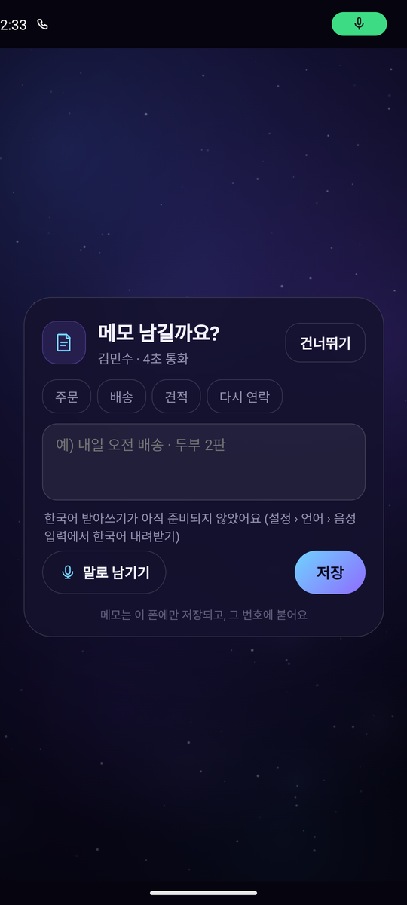
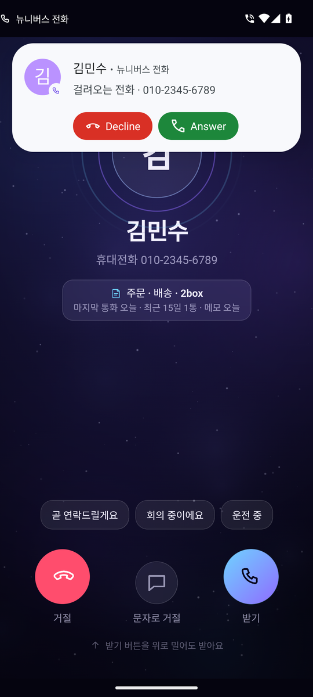
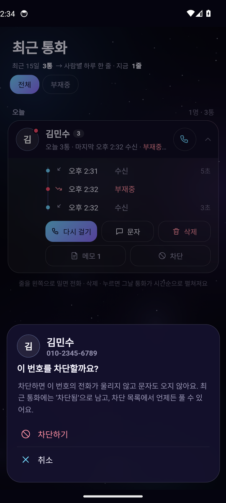
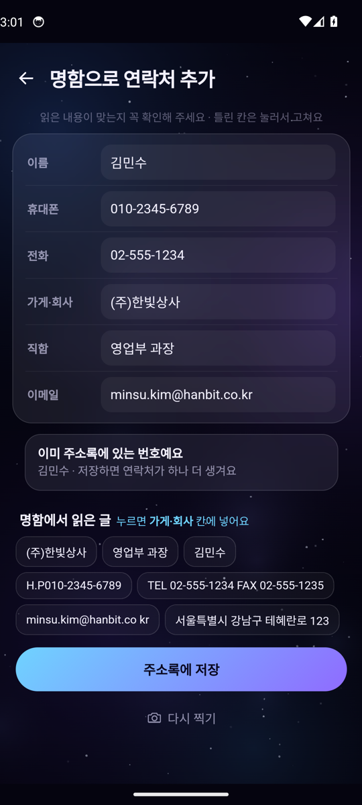
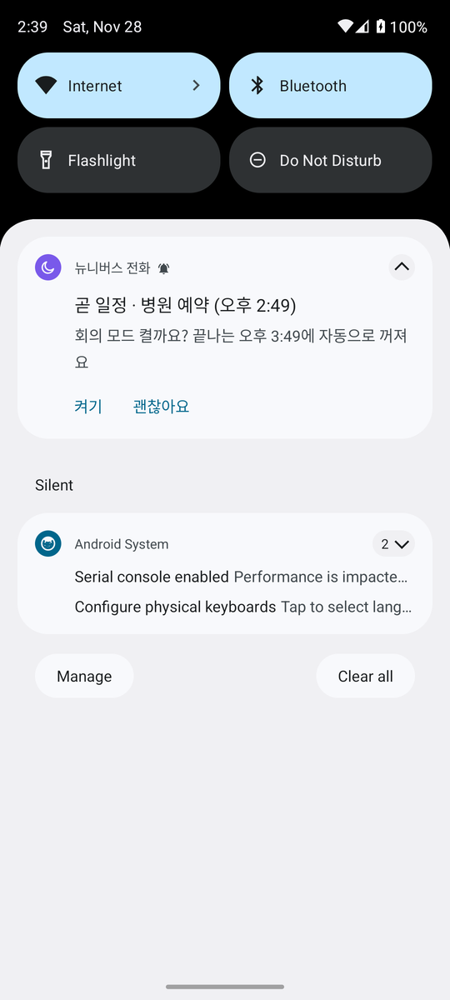
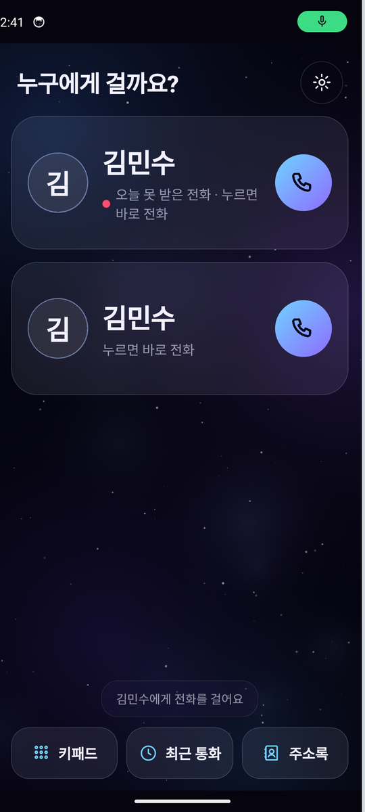
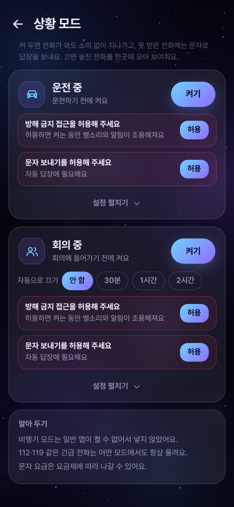
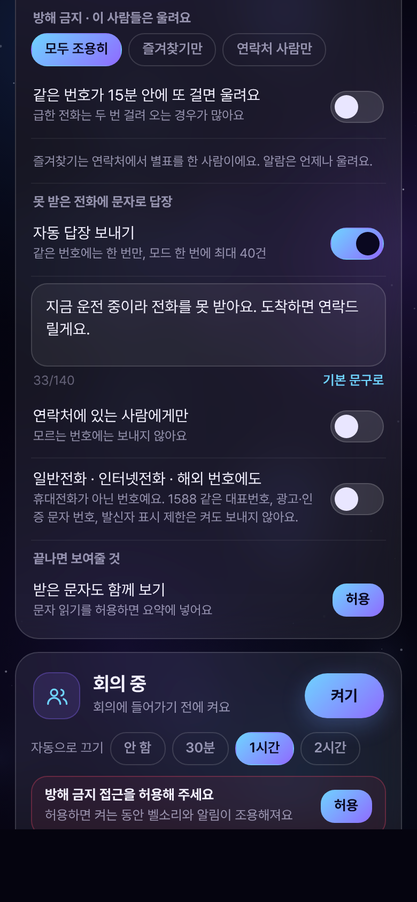
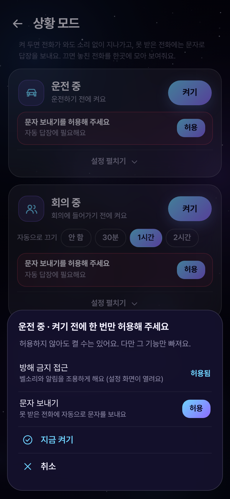
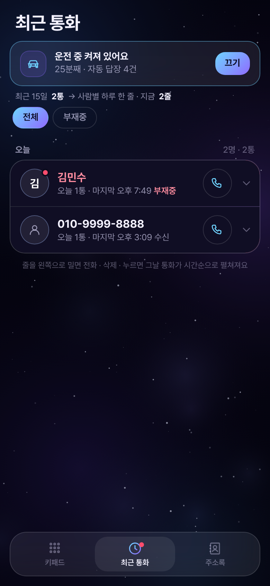
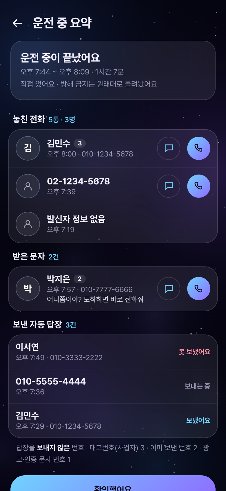
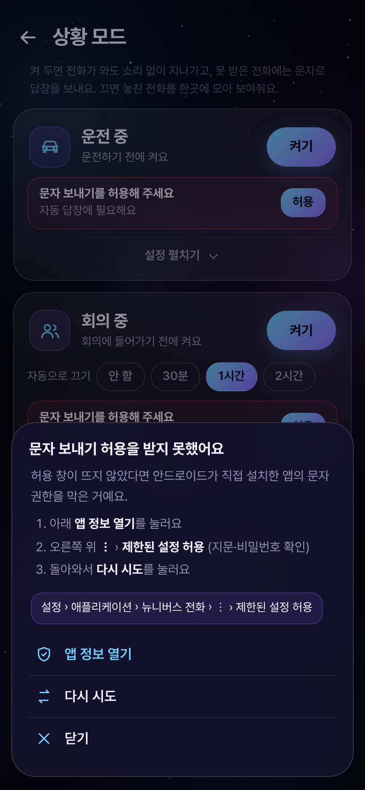


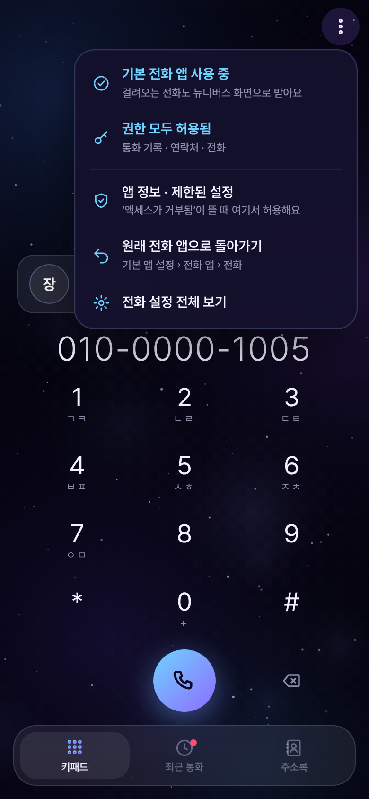
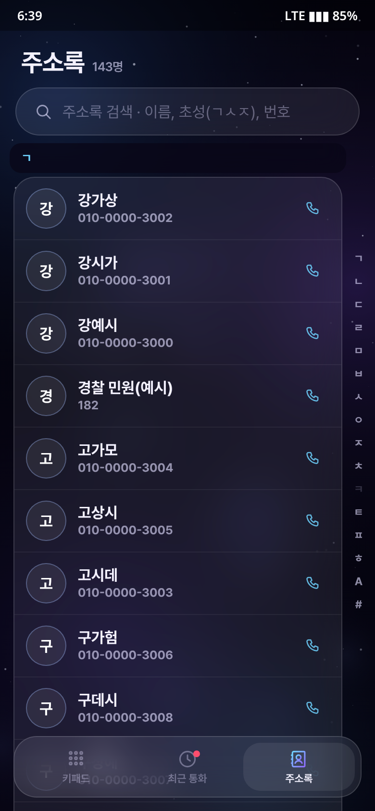


화면은 가짜 예시 데이터로 찍은 것이에요. 맨 위 6장이 v6(에뮬레이터에서 찍음), 그다음 6장이 v5 상황 모드예요.